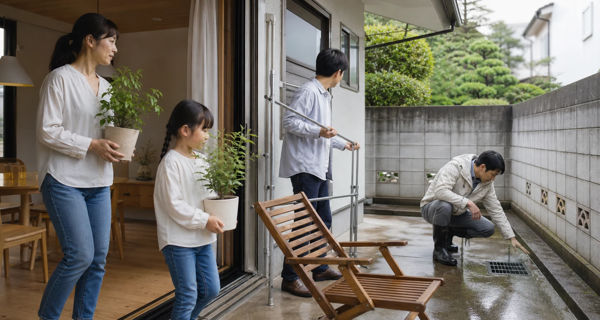
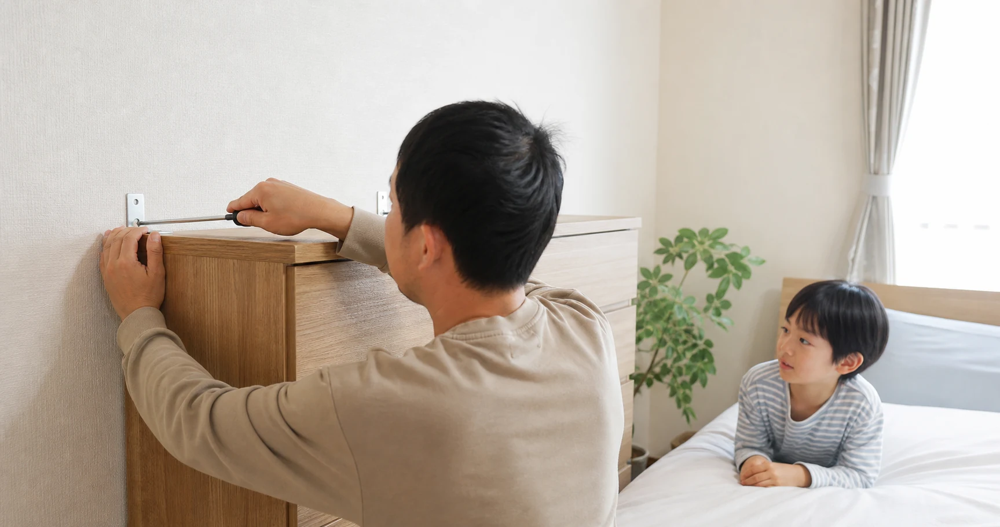

1. まずは「家の外」を確認する
植木鉢や物干し竿など風で動くものは室内へ。ブロック塀や門柱にひび・傾き・ぐらつきがないか確認します。2018年の大阪府北部地震では、高槻市立小学校のブロック塀が倒れ、登校中の児童が亡くなる事故が起きました。古い塀を「見た目は大丈夫」と放置せず、道路に面している場合は早めに点検・相談することが大切です。
怖がるためではなく、「備えておいたから大丈夫」と思える暮らしのために
公開日：2026年9月10日
 文｜エイスケ（住宅と教育の専門家）
文｜エイスケ（住宅と教育の専門家）

台風の季節になると、庭の植木鉢をしまい、窓にテープを貼り、「これで足りているだろうか」と考えることがあります。防災というと特別なグッズを大量にそろえることを想像しがちですが、本当に大切なのは、我が家の危険を知り、家族が動ける形にしておくことです。2019年の令和元年房総半島台風では、首都圏を中心に最大約93万4,900戸の大規模停電が発生しました。台風は事前に進路が分かるからこそ、数日前から準備できる災害でもあります。
植木鉢や物干し竿など風で動くものは室内へ。ブロック塀や門柱にひび・傾き・ぐらつきがないか確認します。2018年の大阪府北部地震では、高槻市立小学校のブロック塀が倒れ、登校中の児童が亡くなる事故が起きました。古い塀を「見た目は大丈夫」と放置せず、道路に面している場合は早めに点検・相談することが大切です。

消防庁は、阪神・淡路大震災の震度7地域で住宅の約6割の部屋で家具が倒れ・散乱したデータを紹介しています。寝室や出入口の近くに背の高い家具を置かない、L字金具や突っ張り棒で固定する、家族と「揺れたらどこへ移動するか」を決めて実際に歩いて確認する――これが最初の一歩です。
阪神・淡路大震災では、地震火災139件のうち通電火災が85件、約6割を占めました。感震ブレーカーは、一定以上の揺れを感知すると自動で電気を遮断する装置です。ただし医療機器など停電の影響を考える必要がある機器もあるため、導入前に確認してください。
庭やベランダの物を片づけ、雨戸・シャッターが閉まるかを確認します。窓そのものを強くするなら、防災防犯安全合わせガラスや窓用シャッターが選択肢です。これらには、ベターリビングが認定する優良住宅部品（BL部品）があります。飛散防止フィルムを選ぶ場合は、日本産業規格（JIS）A 5759「建築窓ガラス用フィルム」に沿った性能をもつ製品か、専門事業者による施工かを確認しましょう。フィルムは窓の割れを完全に防ぐものではないため、ほかの対策と組み合わせて使います。養生テープは応急策にとどまるため、それだけで十分と考えないようにしましょう。
大切なのは、自宅周辺の浸水深や土砂災害のリスクを確認し、どのタイミングでどこへ移動するかを家族で決めることです。浸水深0.5m未満でも避難が遅れると移動が難しくなり、3m以上や家屋倒壊等氾濫想定区域では早期の立ち退き避難が必要になる場合があります。「何mなら必ず自宅」と一律に決めず、自治体のハザードマップと避難情報を確認してください。

台風や大雨の接近に合わせて、いつ・何をするかを時系列で整理するのがマイ・タイムラインです。台風発生時の情報確認、接近1〜2日前の物の片づけ、警戒レベル3・4相当の避難行動――あらかじめ書き出しておくと迷いが減ります。
内閣府は、各家庭で最低3日分、できれば1週間分の食料・飲料水などを備蓄するよう案内しています。飲料水は1人1日3リットルが目安。普段使う食品や水を少し多めに買い、使った分を買い足すローリングストックなら無理なく続けられます。
避難路と集合場所を歩いて確認する、災害用伝言ダイヤル（171）や災害用伝言板（web171）など安否確認の方法を一度試す、離れて暮らす親には災害時の連絡方法と避難先を確認する。防災訓練は、家族を怖がらせる行事ではなく、いざというときに互いを助けやすくするコミュニケーションです。
関連する住まいの機能・設備を探す
関連記事
この記事を書いた人｜エイスケ
1986年生まれ、40歳。実家の建築業・不動産に10年間従事したのち、教育の世界へ。住宅と教育、両方のプロの視点から「豊かな暮らし」をテーマに忖度なく切り込みます。※本コラムは筆者個人の見解・経験に基づくものです。最終的な判断は各分野の専門家にご相談ください。